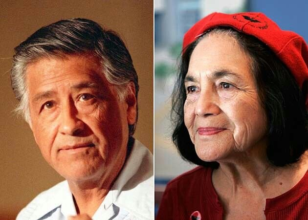

Dolores Huerta And Cesar Chavez;

Dolores Huerta and Cesar Chaves are remembered today though the work that they did, by leading a non-violen farm worker movemt, by doing this they hoped to get equal pays/ living mage and have just working conditions.
So In 1962 they both along with hundreds of farm workers lauched the National Farm Workers Association which preceded into the United Farm Workers Of America (UFW). However during these times their lives were threathen many times which put thier lives and others in jeopardy. Dolores still lives today at the age of 91 being the co-founder of the National Farmworkers Association. Sadly Cesar died at the age of 66 some belive it was because he went on many hunger strikes so when he underwent his third hunger strike (36 days with only driking water) he passed in his sleep.
Dolores Huerta
- Was born on April 10, 1930 in Dawson
- She grew up with her mother, grandfather and Dolores 2 brothers
- Dolores grandfather helped raise Dolores and her brothes while her mother juggled jobs like- waitress and cannery worker until she could buy a small hotel and restaurant.
Cesar Chavez
- Was born on March 31, 1927, Yuma, Arizona
- Cesar grew up on a farm his family owned in Yuma his family also owened a local grocery store
- He grew up with 2 brothers and 2 sisters
- Sadly in 1938 when Cesar was 10 years old his family lost there farm in the great depreession and the dust bowl they then became the part of the people that came to california for a better life after they lost their farm
- The way they lost their farm and home was during the great depression when hundreds of people weren't able to pay their taxes and Cesar family was one of them